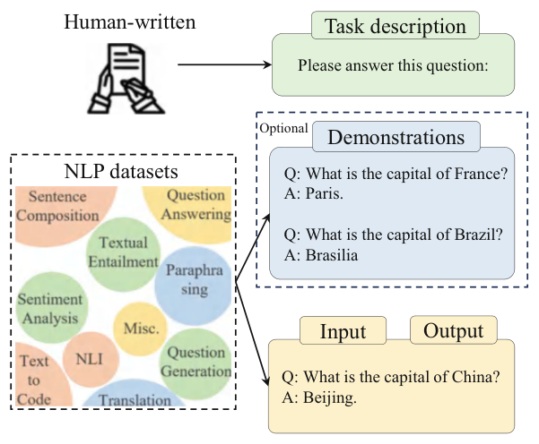
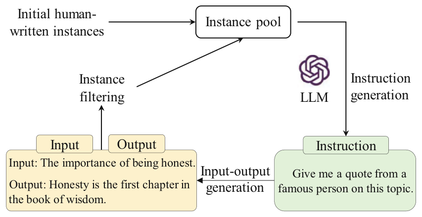
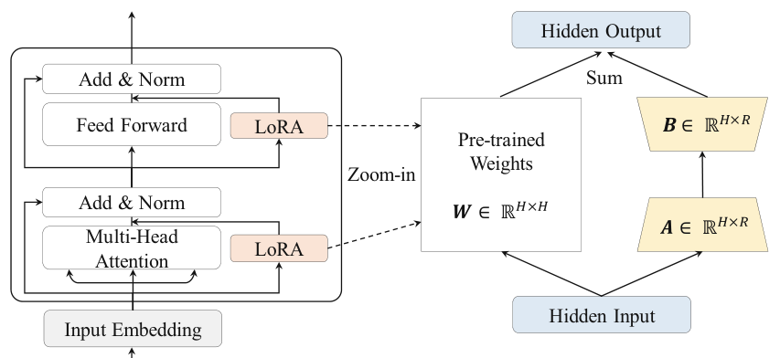
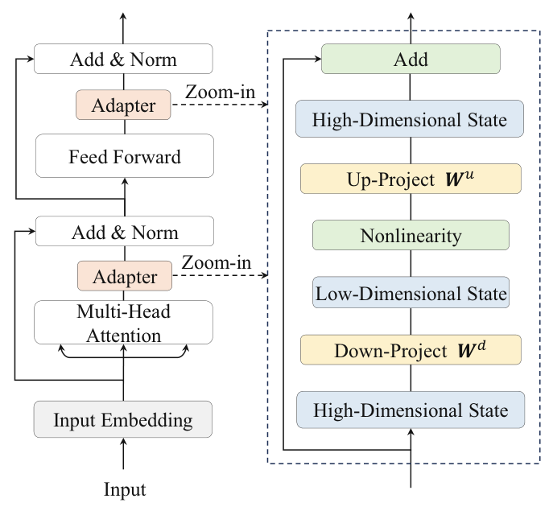
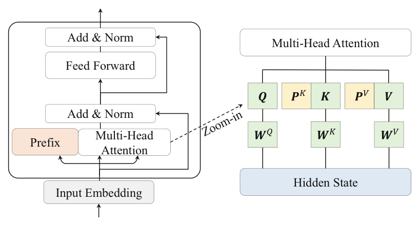
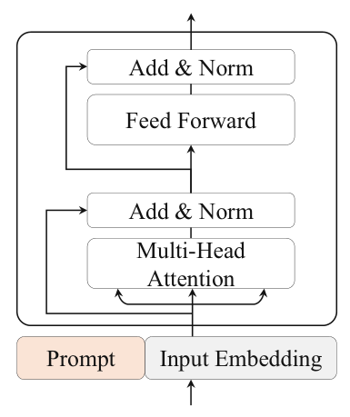
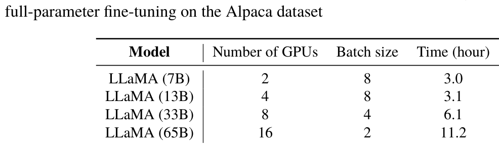
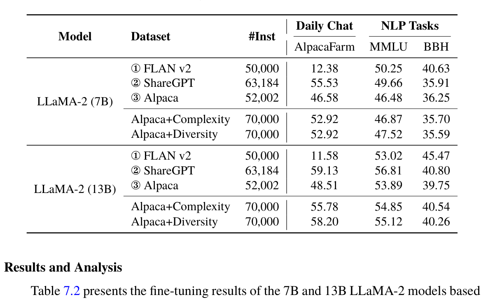
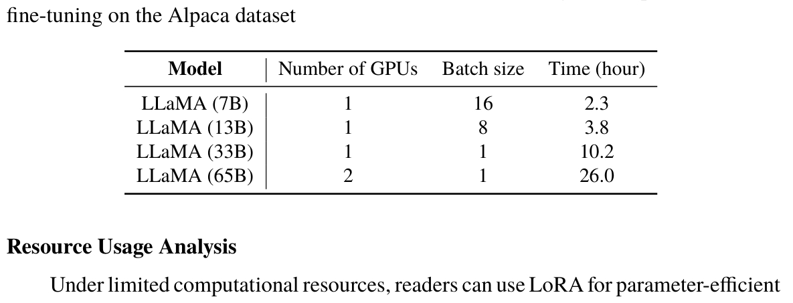

Chapter 7Instruction Tuning
Abstract Pre-training forms the foundational stage of large language models (LLMs), primarily built on the objective of predicting the next token. While pre-training is highly effective, models immediately after this stage often struggle to adapt effectively to task-solving scenarios. To enhance their task-solving capabilities, instruction tuning or supervised fine-tuning is employed, teaching LLMs to solve tasks described in natural language instructions. This approach has proven effective in eliciting and unlocking the task-solving abilities of LLMs.
This chapter provides a comprehensive introduction to instruction fine-tuning methods, covering various aspects from dataset construction to training strategies. We begin by exploring methods for constructing instruction datasets, including the adaptation of existing datasets and the synthesis of high-quality data. We also discuss key factors in instruction data construction and their impact on model performance. Next, we examine typical training strategies for improving instruction tuning, such as optimization settings and data organization.
Additionally, we provide an overview of parameter-efficient fine-tuning methods, particularly in low-resource scenarios, with a focus on the widely used lightweight fine-tuning technique, LoRA (Low-Rank Adaptation). We also briefly introduce several variants of parameter-efficient fine-tuning. Finally, we present code implementations and conduct an empirical study to analyze the effects of different instruction datasets.
Instruction tuning refers to fine-tuning pre-trained language models using labeled data in the question-answering format of natural language. This concept was introduced by researchers from Google in a 2022 ICLR paper [30]. In other references, instruction tuning is also commonly referred to as supervised fine-tuning [17] or multi-task prompted training [31]. The process of instruction tuning begins with the collection or construction of instruction-formatted instance data, followed by tuning the language model’s parameters in a supervised manner. After being instruction-tuned, large language models (LLMs)
demonstrate a strong ability to follow natural language instructions and can solve various downstream tasks using zero-shot prompting. This chapter will introduce methods for constructing instruction datasets (Sect. 7.1) and designing effective training strategies (Sect. 7.2). This will be followed by an overview of parameter-efficient fine-tuning methods in low-resource scenarios (Sect. 7.3). Finally, we will present code implementations and experimental results (Sect. 7.4).
7.1Construction of Instruction Datasets#
Generally speaking, an instance formatted for instruction tuning includes a task description (also referred to as the instruction), task input–output pairs, and optional examples. The following sections will introduce three methods for constructing formatted instruction data and further discuss important factors to consider during the construction process.
7.1.1Construction by Leveraging NLP Task Data#
The NLP community has published numerous open-source datasets centered on traditional NLP tasks, such as machine translation, text summarization, and text classification, which can be utilized to construct instruction datasets. Typically, the instances in these datasets consist of two parts: input and output. For example, in a Chinese-English translation task, the input text “大语言模型已经成为机器学习的一个重要研究方 向” corresponds to the English translation “Large language models have become one important research direction for machine learning”. A key step in generating instruction tuning data is to add task description text to this input–output pair, detailing the task objectives and related information. In this example, an instruction like “Please translate this Chinese sentence into English” can be added to the Chinese-to-English translation dataset. Through this process, instances from an NLP task can be adapted for instruction tuning of LLMs (Fig. 7.1).

After instruction tuning, LLMs can exhibit improved instruction-following capabilities, enabling them to effectively address various downstream tasks [30–32]. It has been shown [30] that adding appropriate task descriptions to existing NLP datasets can significantly enhance the instruction-following abilities of LLMs; conversely, if task descriptions are removed and the model is fine-tuned solely with input–output pairs, its generalized performance is significantly diminished. To better annotate NLP instruction data, researchers have developed the crowdsourcing platform PromptSource,1 which assists annotators in creating and sharing task descriptions for existing NLP datasets. To further diversify training instances, researchers can design specific task descriptions by reversing the input–output structure of existing instances. For example, given a question–answer pair, the traditional task aims to predict the answer based on the question. Simultaneously, special task descriptions (e.g., “Generate a question based on the following answer”) can be employed to guide the model in generating questions based on answers.
In the existing instruction datasets derived from NLP tasks, FLAN, P3, and Super- Natural Instructions are commonly used for instruction tuning of LLMs. Furthermore, researchers have combined these three datasets in specific proportions and introduced specially collected chain-of-thought data, resulting in the instruction dataset FLAN v2 [32]. 1https://github.com/bigscience-workshop/promptsource.
This dataset includes approximately 20M instruction instances and is currently the preferred instruction dataset for NLP tasks.
7.1.2Construction with Daily Conversation Data#
Although converting existing NLP datasets into an instruction format can yield a substantial number of instruction instances, the diversity of such data remains relatively limited, and it may not align well with the real needs of human users. To address this, researchers have used actual questions from daily conversation scenarios to construct instruction data. For example, InstructGPT [17] uses queries submitted by users to the OpenAI API as instruction data. These user queries originate from real-life scenarios and are expressed in natural language, making them particularly suitable for improving the instruction-following abilities of LLMs. To further enhance task diversity, OpenAI has also hired annotators to create additional real-world problems, including open-ended generation, question answering, brainstorming, and more. Subsequently, another group of annotators provides corresponding outputs for these tasks. Ultimately, OpenAI pairs these instructions (whether user-submitted queries or manually crafted ones) with the expected outputs (human-annotated responses) to form training instances.
To promote the open sharing of instruction datasets, researchers have created and open-sourced instruction datasets tailored to daily conversation tasks, such as Dolly [96] and OpenAssistant [95]. These datasets have been meticulously annotated by human experts to ensure high quality. Additionally, researchers have attempted to collect user’s conversational requests as input data through self-developed open platforms and used ChatGPT or GPT-4 to generate responses as output data. A representative example of such datasets is the multi-turn conversational data from ShareGPT [94].
User’s first round input: What is the function of accumulator in CPU?
Model’s first round output: In a computer’s central processing unit (CPU), an ac-
cumulator is a register that is used to store the intermediate results of arithmetic and
logical operations performed by the CPU. The accumulator is a fundamental part of the
CPU’s architecture and is typically used in the execution of instructions that involve the
manipulation of data.
User’s second round input: What are the steps for instruction execution?
Model’s second round output: The steps for instruction execution in a CPU typically
include the following: 1. Fetch the instruction from memory: The CPU retrieves the
instruction that is stored at a specific memory location. 2.Decode the instruction: The
CPU decodes the instruction to determine what operation it specifies. 3. Perform
the operation: The CPU performs the operation specified by the instruction, using the
appropriate data and operands. 4. Store the result: The result of the operation is stored
in a register or memory location. 5. Repeat the process: The CPU continues to fetch,
decode, and execute instructions until the program is complete.
... (Subsequent rounds of dialog omitted)
Example 7.1 A multi-turn conversation instance in ShareGPT
7.1.3Construction with Synthetic Data#
To reduce the cost of manually collecting and annotating data, researchers have proposed a semi-automatic data synthesis method. By leveraging existing high-quality instruction data as demonstration examples, LLMs are utilized to generate diverse task descriptions and input-output data via in-context learning [64, 189]. As illustrated in Fig. 7.2, Self-Instruct [64] employs over 100 manually crafted examples as the initial task pool. It then randomly selects samples from this pool as exemplars to further prompt LLMs to generate new instruction data. This semi-automatic synthesis method enables efficient generation of large-scale instruction data, significantly reducing the economic cost of manual annotation and has been widely adopted in practice.
Considering that the instances generated by Self-Instruct may be overly simplistic or lack diversity, WizardLM [189] proposes an improved synthesis method called Evol- Instruct. This approach enhances the complexity and diversity of instances through an
Initial human-
Instance pool
written instances
Instruction
Instance
generation
filtering LLM Output
Input
Instruction
Input-output
generation

evolutionary strategy based on depth and breadth. Furthermore, LLMs can be trained to generate high-quality instruction data. For instance, Self-Align [190] employs multiple filtering techniques for synthetic data based on human alignment principles. This method uses in-context learning to guide ChatGPT in selecting high-quality instances, which are subsequently used to train new models, and then leverages these models to generate instruction data aligned with human preferences. Additionally, some research adopts the technique of instruction backtranslation [191] to optimize the quality of the output text. Specifically, instruction backtranslation uses existing text (such as Wikipedia) as output and then learns to synthesize the corresponding input instructions using in-context learning.
To help readers better understand these discussed methods, we introduce two typical instruction data synthesis techniques below.
Self-Instruct
Self-Instruct [64] leverages the data synthesis capability of LLMs, such as ChatGPT, to efficiently generate a large amount of data iteratively. Initially, this method constructs a pool of 175 high-quality and diverse samples manually, then generates instruction data through the following two main steps.
(1) Instruction data generation. A small subset of instruction data is randomly selected from the task pool as examples, and specific instructions are designed to prompt LLMs to generate new instruction data. Specifically, the model uses the instructions and
in-context examples shown in Example 7.2 as prompts to generate new task descriptions and corresponding outputs.
You are asked to come up with a set of 20 diverse task instructions. These task instructions
will be given to a GPT model, and we will evaluate the GPT model for completing the
instructions.
Here are the requirements:
1. Try not to repeat the verb for each instruction to maximize diversity.
2. The language used for the instruction also should be diverse. For example, you
should combine questions with imperative instructions.
... (subsequent requirements omitted)
List of 20 tasks:
### Instruction: Converting 85 F to Celsius.
### Output: 85 degrees Fahrenheit is equal to 29.44 degrees Celsius.
### Instruction: Is there anything science can’t explain?
### Output: There are many things that science cannot explain, such as the origin of
life, the existence of consciousness, and the nature of the universe.
... (subsequent examples omitted)
Example 7.2 Instruction used for Self-Instruct
(2) Filtering and post-processing. The main purpose of this step is to remove low-quality or duplicate generated instances to ensure the diversity and effectiveness of the instruction data. Common filtering methods include removing instructions that are highly similar to those already in the task pool, instructions for which the model has difficulty generating responses, instructions that are too long or too short, as well as instances where the input or output contains duplicate content.
Self-Instruct has now become a fundamental method for synthesizing instruction data. In the original paper, GPT-3 is used to synthesize the Self-Instruct-52K dataset, while Alpaca further utilizes the more capable text-davinci-003 to synthesize the Alpaca-
52K dataset. Subsequent research has employed even more powerful models (such as GPT-4) to synthesize instruction data tailored for various languages and domains.
Evol-Instruct
The Evol-Instruct method proposed by WizardLM [189] is a technique for increasing the complexity of instruction data using LLMs. This method builds upon an initial instruction dataset, such as the Alpaca dataset, and primarily consists of two steps:
I want you act as a Prompt Rewriter.
Your objective is to rewrite a given prompt into a more complex version to make those
famous AI systems (e.g., ChatGPT and GPT4) a bit harder to handle.
But the rewritten prompt must be reasonable and must be understood and responded by
humans.
Your rewriting cannot omit the non-text parts such as the table and code in #Given
Prompt#. Also, please do not omit the input in #Given Prompt#.
You SHOULD complicate the given prompt using the following method:
If #Given Prompt# contains inquiries about certain issues, the depth and breadth of the
inquiry can be increased. or
You should try your best not to make the #Rewritten Prompt# become verbose, #Rewritten
Prompt# can only add 10 to 20 words into #Given Prompt#.
‘#Given Prompt#’, ‘#Rewritten Prompt#’, ‘given prompt’ and ‘rewritten prompt’ are not
allowed to appear in #Rewritten Prompt#
#Given Prompt#:
<Here is instruction.>
#Rewritten Prompt#:
Example 7.3 A sample instruction for in-depth evolution used for Evol-Instruct
(1) Instruction evolution. In this step, the LLM serves as the instruction evolver, expanding instructions in two directions: in-depth evolution and in-breadth evolution. In-depth evolution complicates the instructions through five specific types of prompts: adding constraints, deepening the question, concretizing the problem, increasing reasoning steps,
and complicating inputs. On the other hand, in-breadth evolution aims to expand the range of instruction topics, broaden the scope of capabilities involved, and enhance the overall diversity of the dataset.
Examples 7.3 and 7.4 illustrate specific instructions obtained through in-depth and in-breadth evolution. By taking the original instructions along with these specific prompts as input, the LLM generates new, evolved instructions. These newly generated instructions are then processed by the LLM to produce corresponding answers, forming new instruction-output data instances.
I want you act as a Prompt Creator.
Your goal is to draw inspiration from the #Given Prompt# to create a brand new prompt.
This new prompt should belong to the same domain as the #Given Prompt# but be even
more rare.
The LENGTH and difficulty level of the #Created Prompt# should be similar to that of
the #Given Prompt#.
The #Created Prompt# must be reasonable and must be understood and responded by
humans.
‘#Given Prompt#’, ‘#Created Prompt#’, ‘given prompt’ and ‘created prompt’ are not
allowed to appear in #Created Prompt#.
Given Prompt#:
<Here is instruction.>
#Created Prompt#:
Example 7.4
A sample instruction for in-breadth evolution used for Evol-
Instruct
(2) Post-processing. In this stage, low-quality instances are removed from the dataset to ensure overall quality and diversity. The following rules are primarily applied: using ChatGPT to compare pre-evolved and post-evolved instructions and removing instructions that ChatGPT deems to have minimal differences; eliminating instructions that are difficult for the LLM to respond to, such as those resulting in responses with “sorry” or overly
short replies; and removing instructions or responses that contain excessive punctuation or conjunctions.
Evol-Instruct primarily utilizes gpt-3.5-turbo for instruction evolution. This method has also been applied to fields such as mathematics (WizardMath) and coding (WizardCoder) for data synthesis, enhancing the depth and breadth of instruction data in these specific domains.
7.1.4Key Factors for Instruction Data Construction#
In instruction tuning, factors such as the format and quantity of instruction data significantly impact the performance of the fine-tuned model. We will discuss how to construct a high-quality instruction dataset from three perspectives: instruction format design, instruction data scaling, and instruction data refinement.
Instruction Format Design
The instruction format is a critical factor influencing the performance of LLMs [192]. Generally, adding a task description directly to existing NLP task data can effectively enhance the model’s understanding and generalization capabilities for various tasks. Additionally, including a moderate number of examples as context can improve the model’s performance and reduce its sensitivity to the instruction format. During the training of FLAN-T5, both instruction data with examples (few-shot) and without examples (zeroshot) are used. Experiments have shown that this mixed prompting training approach helps improve the evaluation performance of downstream tasks in both few-shot and zero-shot scenarios.
To elicit the step-by-step reasoning ability of LLMs, researchers have also attempted to incorporate chain-of-thought data into instruction datasets [32]. For instance, FLAN-T5 and FLAN-PaLM utilize data containing chain-of-thought annotations during instruction tuning, achieving notable performance improvements across various downstream tasks. These tasks include complex reasoning tasks (such as commonsense reasoning and arithmetic reasoning) and common question answering tasks (such as sentiment analysis and extractive question answering) [32, 193].
However, instruction data does not always benefit from being overloaded with context information. Adding seemingly useful content, such as items to avoid, reasons, or
suggestions, to the instructions may not lead to performance improvements and may even have adverse effects on model capacity [192].
Instruction Data Scaling
As an initial study, FLAN-T5 [32] investigates the impact of the amount of instruction data on model performance in unknown NLP tasks. By gradually increasing the number of instructions to 0.18M, 5.55M, 7.2M, and 17.26M, the researchers find that model performance consistently improves. However, when the number of instructions reaches 7.2M, the rate of performance improvement significantly slows. The instructions used in FLAN-T5 are primarily targeted at traditional NLP tasks, which might not yield significant enhancements for daily conversation tasks [17].
For a pre-trained base model, a certain amount of high-quality instruction data can effectively activate the model’s conversational abilities. Alpaca [33] utilizes 52K synthetic data instances for instruction tuning of LLaMA (7B), achieving performance close to that of text-davinci-003 in evaluations conducted on conversational tasks. Furthermore, LIMA [194] leverages only a thousand high-quality manually labeled instruction data instances to fine-tune LLaMA (65B), achieving satisfactory performance in conversation-oriented tests.
However, relying solely on a few instruction instances cannot lead to robust comprehensive capabilities. It is crucial to scale up with more complex instruction data. Orca [195] addresses this by expanding the large-scale instruction set of FLAN-T5. It employs GPT-4 and ChatGPT to answer each question with step-by-step reasoning, resulting in five million synthetic examples designed to enhance the complex reasoning abilities of downstream models. The LLaMA (13B) model fine-tuned with this dataset shows strong performance in both NLP task evaluations (AGIEval) and conversational task evaluations (VicunaBench).
Instruction Data Refinement
Based on existing instruction datasets, researchers have attempted to use rewriting mechanisms to enhance the quality or diversity of instruction data. Evol-Instruct employs both in-depth and in-breadth evolution strategies to generate improved instructions, making them either more challenging or diverse. The YuLan model introduces a topic diversity enhancement method, which involves collecting 293 commonly used topic labels from
Zhihu (e.g., “education” and “sports”). Then, a random topic is selected, and ChatGPT is used to rewrite the instruction data to align it with the chosen topic, using a prompt like “Please help me rewrite the following instruction to fit the topic of education.” Finally, a quality filtering process is conducted to obtain high-quality and diverse instruction data.
Researchers have investigated various instruction selection strategies within large datasets for fine-tuning purposes. Alpagasus leverages GPT-4 to extract high-quality data from the original Alpaca dataset, selecting 9000 top-scoring instructions. These carefully chosen instructions are then employed to fine-tune the model, yielding performance on downstream tasks that is comparable to that achieved using the original 52K dataset. The YuLan model introduces an instruction selection method by estimating the difficulty level of instruction data through LLMs’ perplexity scores. Instructions that are too simple or too difficult are discarded to address issues such as model training instability and overfitting.
Summary
For instruction tuning, it is preferable to use ample and diverse instruction data, whether manually annotated or synthesized by LLMs. As the quantity of high-quality instruction data increases, the performance of the fine-tuned model tends to improve. Incorporating complex reasoning instructions is also recommended, as they can significantly enhance model capabilities. However, there is still a lack of standardized guidelines for the large-scale generation of instruction data that aligns with human needs.
7.1.5The Effect of Instruction Tuning#
This subsection will discuss the impact of instruction tuning on model capacity from three aspects.
Performance Improvement
Instruction tuning, which involves training LLMs using instruction-formatted datasets, primarily enhances or unlocks the task-solving capabilities of these models [32]. It has been shown that language models of different scales (ranging from 77M to 540B parameters) benefit from instruction tuning [32, 93], with improvements becoming more pronounced as model size increases. Notably, some small models that undergo instruction
tuning may even outperform larger models without such tuning. Furthermore, instruction tuning achieves relatively stable gains across different model architectures (e.g., encoderdecoder and causal decoder), pre-training objectives (e.g., language modeling and denoising autoencoding), and fine-tuning methods (e.g., sequence-to-sequence loss and hybrid denoisers) [32]. This demonstrates that instruction tuning is a highly generalizable method for enhancing language model capabilities [32]. Additionally, instruction tuning incurs significantly lower costs compared to pre-training, making it more economical to implement.
Task Generalization
Instruction tuning guides models to understand natural language instructions and complete corresponding tasks. Instruction tuning improves LLMs’ ability to follow instructions and solve tasks, allowing them to tackle unseen tasks without requiring task-specific training data. Instruction tuning also alleviates some common issues observed in LLMs during the pre-training stage, such as generating repetitive content or merely completing the input without addressing the relevant task [17, 32]. Moreover, LLMs trained with English instruction data can transfer these capabilities to tasks in other languages. For instance, researchers leverage the English task collection P3 to conduct instruction tuning on the multilingual model BLOOM, yielding the BLOOMZ-P3 model [196]. In multilingual sentence completion tasks, BLOOMZ-P3 demonstrates over a 50% performance improvement compared to the base model BLOOM. These experimental results indicate that instruction tuning enables LLMs to acquire relatively generalized task-solving capabilities from English data and transfer these capabilities to other languages [196]. Domain Specialization
General LLMs perform well on traditional NLP tasks and daily conversation tasks. However, their performance in specific domains, such as medicine, law, and finance, may still lag behind that of domain-specific models. In practical applications, instruction tuning can be applied to LLMs to adapt them to downstream tasks in specific domains. For instance, in the medical domain, researchers have proposed instruction tuning of FLAN-PaLM [32] using medical datasets, leading to the development of the Med-PaLM model [197], which demonstrates strong performance across various medical tasks. Similarly, Chinese researchers have released open-source medical models, such as
BenTsao [198], which are developed by instruction tuning LLaMA. In the e-commerce domain, researchers have fine-tuned LLMs to adapt them for recommendation tasks [199], achieving significant performance improvements. Furthermore, instruction tuning has also shown promising adaptation results in other fields, such as law and finance [200, 201]. These works suggest that instruction tuning provides an effective approach for domain adaptation of LLMs, enhancing their performance in real-world applications.
7.2Instruction Tuning Strategies#
This section primarily introduces training strategies specific to instruction tuning, building on the pre-trained base model.
7.2.1Optimization Settings#
The optimizer settings (AdamW, Adafactor), stability training methods (weight decay, gradient clipping), and training techniques (3D parallelism, ZeRO, and mixed-precision training) used in instruction tuning generally remain consistent with those in the pre-training stage and can be directly adopted. Below, we introduce the unique optimization settings specific to instruction tuning.
- Objective function. During the pre-training stage, a language modeling loss (as discussed in Sect. 6.1.1) is typically used to optimize the model’s prediction loss for each token. In contrast, instruction tuning is a supervised training process that usually employs a sequence-to-sequence loss as the objective function, calculating the loss only based on the output part while ignoring the input part.
- Batch size and learning rate. After pre-training, the instruction tuning stage typically requires the use of smaller batch sizes and learning rates to update the model parameters. For instance, InstructGPT (175B) employs a batch size of 8 and a constant learning rate of 5.03 × 10-6. during fine-tuning. Similarly, Alpaca (7B) uses a batch size of 128, with the learning rate first warmed up to 2 × 10-5. with a cosine decay schedule.
- Efficient training of multi-turn dialogue data. For multi-turn dialogue data, a typical training approach splits long utterances into multiple separate instances and then trains them independently, which results in a significant amount of redundant computation over the same dialogue histories. To improve training efficiency, specialized masking mechanisms can be employed for multi-turn dialogue data. Since there is no clear boundary between input and output in a causal decoder, the entire multi-turn dialogue can be processed in a single forward pass. Then, the loss is computed solely for the output portion of each turn using an appropriate masking mechanism, thereby reducing redundant computations.
7.2.2Data Organization Strategies#
In addition to the optimization settings mentioned above, instruction tuning also requires designing an appropriate data organization strategy to enable LLMs to achieve better fine-tuning results. This subsection introduces three commonly used strategies for organizing data.
Balancing Data Distribution
To enhance the comprehensive capabilities of LLMs, researchers often recommend mixing instruction datasets from diverse sources [202]. A common method is to merge the datasets and then sample each instance with equal probability from the combined dataset. Typically, a mixture of NLP task datasets (such as FLAN v2), daily conversation datasets (such as ShareGPT), and synthetic datasets (such as GPT4-Alpaca) is used for instruction tuning of LLMs.
Furthermore, existing research work [32, 193] has shown that increasing the sampling ratio of high-quality datasets (such as FLAN and P3) helps improve model performance. In the FLAN v2 dataset collection, the final mixing ratios are: FLAN (46%), T0 (27.9%), NIV2 (24.2%), and CoT data (1.8%). To prevent larger datasets from dominating the sampling process, instruction tuning typically sets a maximum capacity to limit the maximum number of instances that can be sampled from each dataset [67]. For example, in FLAN v2, the maximum capacities for the FLAN, T0, NIV2, and CoT datasets are set to 30,000, 20,000, 5000, and 100,000, respectively.
Multi-Stage Instruction Tuning
In Sect. 7.1, three commonly used types of instruction data are introduced: NLP task data, daily conversation data, and synthetic data. Due to the differences in scale and semantic characteristics among these three types of data, it is necessary to effectively schedule the use of different data resources during training to achieve better results. YuLan adopts a multi-stage instruction tuning strategy: it first fine-tunes the model using large-scale NLP task data, then further fine-tunes it using relatively diverse daily conversation and synthetic instruction data. To avoid the problem of catastrophic forgetting, a moderate amount of NLP instruction data can be incorporated during the second stage. This multi-stage instruction tuning strategy can also be applied in a more generalized way. For example, during training, the difficulty and complexity of instructions can be gradually increased, allowing for stage-by-stage training to enhance LLMs’ ability to follow complex instructions.
Combining Instruction Tuning and Pre-training
Incorporating instruction data into the pre-training stage has become a common training technique. By utilizing instruction data in advance, models can better perceive downstream tasks during pre-training, enabling them to more effectively learn knowledge and information from the pre-training data in a task-oriented manner. For example, GLM- 130B [150] incorporates instruction datasets during the pre-training process, accounting for approximately 5% of the pre-training data. Additionally, MiniCPM [63] proposes adding an additional “annealing stage” between the pre-training stage and the instruction tuning stage. This stage employs a mix of high-quality pre-training data and instruction data. Experimental results show that this strategy outperforms the traditional two-stage
Similarly, YuLan-Mini [53] approach of pre-training followed by instruction tuning.
has also incorporated high-quality instruction data during pre-training, demonstrating significant performance improvements across various benchmarks.
Additionally, a small amount of pre-training data can be included during the instruction tuning process to improve training stability.
For example, OPT-IML [193] incorporates 5% of pre-training data during the instruction tuning stage, resulting in enhancements in both classification and generation tasks. However, this strategy appears to be rarely used in most existing LLMs according to public literature.
7.3Parameter-Efficient Fine-Tuning#
Instruction tuning enables LLMs to better follow and execute human instructions. However, due to the huge number of parameters in LLMs, full-parameter fine-tuning can lead to significant computational overhead. In this section, we will discuss how to conduct parameter-efficient fine-tuning (PEFT) for LLMs, also known as lightweight fine-tuning. In the existing literature, parameter-efficient fine-tuning [203–205] is a critical research area aiming to reduce the number of trainable model parameters while achieving performance levels close to those of full-parameter fine-tuning. This section will introduce parameter-efficient fine-tuning methods for Transformer-based architectures.
7.3.1Low-Rank Adaptation (LoRA)#

We first introduce a mainstream lightweight fine-tuning technique for LLMs called low-rank adaptation (LoRA). The illustration of LoRA fine-tuning is shown in Fig. 7.3. Background of LoRA
LLMs contain numerous linear transformation layers (see details in Sect. 6.4.2), where the parameter matrices typically have very high dimensions. Researchers [205] have found that when adapting the model to a specific task, the parameter matrix is often over-parameterized, meaning that it has a lower intrinsic rank. To address this issue, LoRA [205] introduces low-rank decomposition matrices added to the parameter matrix of each layer to approximate the parameter updates. This approach reduces the number of tunable parameters required for adapting to downstream tasks. Given a model parameter
matrix W ., the updating process can be generally expressed as follows:

where W 0. is the original parameter matrix, and ΔW . is the gradient matrix for updates. The key idea of LoRA is to freeze the original matrix W 0 ∈ RH×H . and approximate the

and B ∈ RH×R., where R
H. represents the reduced rank. During fine-tuning, the original parameter matrix W 0. remains unchanged, while the low-rank matrices A. and B. are trainable parameters for adapting to downstream tasks. In the forward propagation process, the equation for computing the intermediate state h = W 0 · x. in the original computation is modified as follows:

After training, the original parameter matrix W 0. and the learned weights A. and B. are further merged as W = W 0 + A · B
., resulting in the updated parameter matrix. Consequently, the LoRA fine-tuned model does not introduce additional computational overhead during inference.
Memory Estimation of LoRA
In Sect. 6.4.4, we have analyzed the memory consumption required for the full-parameter training. Here, we continue to use the similar analysis method to estimate the memory resources saved by LoRA tuning.
Assuming the number of parameters that LoRA needs to train is PLoRA., and the original number of the model is P, we focus on the memory usage of model parameters and optimizer states, as they are the primary sources of memory consumption. Other components are ignored because they occupy a small proportion of the entire cost. In LoRA tuning, the number of model parameters that need to be preserved is 2P + 2PLoRA. The memory required by gradient and optimizer states is 2PLoRA + 4PLoRA + 4PLoRA + 4PLoRA = 14PLoRA. Therefore, the memory required for LoRA tuning is significantly reduced from 16P for full-parameter fine-tuning to 2P + 16PLoRA.
Generally speaking, LoRA is primarily applied to the linear transformation matrices of the multi-head attention layer (i.e., W Q, W K, WV, W O ∈ RH×H .). Therefore, PLoRA = 8LHR., where L, H, R. are the number of model layers, the hidden size, and the rank,
respectively. Taking LLaMA (7B) (L = 32, H = 4096.) as an example, the common rank R is set to 8, then PLoRA = 8, 388,608., 2P + 16PLoRA = 13,611,048,960 = 14.GB, and 16P = 107,814,649,856 = 108.GB. As we can see, the GPU memory required for model tuning drops significantly from 108 to 14 GB, demonstrating that LoRA effectively P., reduces the GPU memory resources required for fine-tuning the model. Since PLoRA it can be approximately considered that lightweight fine-tuning reduces the GPU memory demand from 16P to 2P.
Variants of LoRA
In the original implementation of LoRA, the rank R of each low-rank matrix is set to the same value, which cannot be flexibly adjusted for specific tasks or modules. To address this limitation, AdaLoRA [206] introduces a dynamic low-rank adaptation method. This method adjusts the rank allocated to each parameter matrix during fine-tuning while maintaining a fixed total number of trainable parameters. Specifically, the model evaluates each parameter matrix’s importance to training performance by using the fine-tuning loss during the training process: matrices deemed more important are assigned higher ranks to better adapt to the target task, while those considered less important receive lower ranks to prevent overfitting and reduce computational overhead.
Although LoRA effectively reduces memory consumption, the cost of fine-tuning remains substantial for models with tens or hundreds of billions of parameters. QLoRA [207] further reduces memory usage by quantizing the original parameter matrices to 4-bit representation while training the low-rank parameters at 16-bit precision. This approach preserves fine-tuning effectiveness while significantly reducing memory consumption. Following previous analysis, for a model with P parameters, the memory requirement for QLoRA fine-tuning decreases from 2P in LoRA to 0.5P. Consequently, the QLoRA method enables the fine-tuning of a 65B model on a single A6000 GPU (48 GB) while achieving fine-tuning performance comparable to that of a 16-bit model.
Applications of LoRA in LLMs
With the rise of LLMs, parameter-efficient fine-tuning methods such as LoRA have garnered increasing attention. Compared to full-parameter fine-tuning, LoRA significantly reduces training costs while maintaining model performance. It is widely used in the instruction tuning of open-source LLMs, such as LLaMA and BLOOM. For instance,
Alpaca-LoRA is a lightweight fine-tuned version of the Alpaca model, based on the LLaMA (7B) model and fine-tuned on 52,000 synthesized instances using LoRA. Additionally, the open-source community actively explores LoRA’s application in fine-tuning LLaMA-series models, spanning different languages (e.g., Chinese, Thai, Spanish) and various domains (e.g., dialog, mathematics, code). Overall, among the various parameter-efficient fine-tuning methods, LoRA is notable for its ease of implementation and its capacity to achieve respectable performance with a significantly reduced number of trainable parameters.
7.3.2Other Parameter-Efficient Fine-Tuning Methods#

In this subsection, we will introduce other parameter-efficient fine-tuning methods, including adapter tuning, prefix tuning, and prompt tuning. While these methods are widely used with pre-trained language models, their application in LLMs is relatively less common. For the sake of completeness, we include a brief introduction of the three methods.
Adapter Tuning
Adapter tuning integrates small neural network modules, called adapters, into Transformer models [208]. To implement the adapter module, researchers propose using a
bottleneck network architecture: it first compresses the original feature vector h. to a lower dimension, then applies a nonlinear transformation using an activation function, and finally restores it to the original dimension. Formally, this process can be expressed by the following equation:

where W d ∈ RH×R., W u ∈ RR×H ., and R
H. Typically, the adapter module is incorporated into each layer of the Transformer architecture and is inserted serially after the multi-head attention layer and the feed-forward network layer, but before the layer normalization. During fine-tuning, the adapter module is optimized based on the specific task objectives, while the parameters of the original language model remain unchanged. This approach effectively reduces the number of parameters that need to be optimized in the fine-tuning process. Figure 7.4 illustrates the diagram of adapter tuning.

Prefix Tuning
Prefix tuning [203] introduces a set of prefix parameters into the multi-head attention layers of language models. These prefix parameters form a trainable continuous matrix, which acts as the embedding vectors of several virtual tokens and is optimized according to specific tasks. In the implementation, the computation for each attention head can be represented by the following equation, which extends the original attention computation Eq. 5.7:

where “⊕.” denotes matrix concatenation (with prefix tokens being concatenated before the key and value matrices), and PK, PV ∈ RL×H . denote the prefix matrices, which are sequences of prefix tokens. Here, L represents the length of the prefix vectors, typically ranging between 10 and 100, which can be adjusted according to specific tasks. During prefix tuning, only the prefix parameters are optimized, enabling efficient parameter optimization. Figure 7.5 provides a schematic illustration of the prefix tuning strategy.
Add & Norm
Feed Forward
Add & Norm
Multi-Head
Attention
Prompt
Input Embedding

Prompt Tuning
Unlike prefix tuning, prompt tuning adds trainable prompt vectors solely in the input embedding layer. Building on discrete prompt methods (detailed in Sect. 10.1), prompt tuning introduces a set of continuous prompting vectors alongside the input text. These are either incorporated in a free form [209] or a prefix form [204] to tackle specific tasks. In practical implementation, only the learnable prompt vectors are combined with the input text vectors and fed into the language model. P-tuning [209] suggests using a free-form method (i.e., without constraints on the position of prompt vectors) to integrate input text and prompting vectors, employing a bidirectional LSTM to learn the embedding representations of the prompt vectors. This approach is applicable to both natural language understanding and generation tasks. Another notable method called prompt-tuning2 [204] involves prepending prompts in a prefix form by directly inserting continuous vectors before the input. In prompt tuning, only the prompt vectors are trained 2In this book, “prompt tuning” refers broadly to methods that introduce additional parameters in the prompt for
for specific tasks. As it only includes a minimal number of trainable parameters, the performance of this method depends on the capability of the underlying language model and the difficulty of the downstream tasks [204]. Figure 7.6 presents the schematic diagram of the prompt tuning method.
7.4Code Practice and Empirical Analysis#
To help readers better understand the implementation of parameter-efficient fine-tuning methods, we provide the example code that demonstrates the algorithmic process. Additionally, we evaluate the tuning performance of models using different instruction datasets based on this code.
7.4.1Code Practice of Instruction Tuning#
import torch
from dataclasses import dataclass
from dataset.sft_dataset import SFTDataset
from transformers import (
AutoModelForCausalLM,
AutoTokenizer,
HfArgumentParser,
PreTrainedTokenizer,
TrainingArguments,
Trainer,The example code for instruction tuning closely resembles the pre-training code (as detailed in Sect. 6.5). The main differences lie in the construction of the instruction dataset (SFTDataset) and the computation of sequence-to-sequence loss (DataCollat orForSupervisedDataset). The following code illustrates the overall training process for instruction tuning of the YuLan model using LLMBox.
from transformers.hf_argparser import HfArg
IGNORE_INDEX = -100
# User-input hyperparameters
@dataclass
class Arguments(TrainingArguments):
# Model architecture
model_name_or_path: str = HfArg(
default=None,
help="The model name or path, e.g., `meta-llama/Llama-2-7b-hf`",
)
# Training dataset11 )
dataset: str = HfArg(
default="",
help="Setting the names of data file.",
)
# Context window size
model_max_length: int = HfArg(
default=2048,
help="The maximum sequence length",
)
# Save only model parameters (do not save optimizer states)
save_only_model: bool = HfArg(
default=True,
help="When checkpointing, whether to only save the model, or also
the optimizer, scheduler \& rng state.", )
# Use BF16 mixed precision training
bf16: bool = HfArg(
default=True,
help="Whether to use bf16 (mixed) precision instead of 32-bit.",
)
# Batch data and construct sequence-to-sequence loss
@dataclass
class DataCollatorForSupervisedDataset():
tokenizer: PreTrainedTokenizer
def __call__(self, instances):
input_ids, labels = tuple([instance[key] for instance in instances] for key in ("input_ids", "labels"))input_ids = torch.nn.utils.rnn.pad_sequence(
input_ids, batch_first=True,
padding_value=self.tokenizer.pad_token_id)
labels = torch.nn.utils.rnn.pad_sequence(labels, batch_first=True,
padding_value=IGNORE_INDEX) return dict(
input_ids=input_ids,
labels=labels,
)
def train():
# Parse command line arguments
parser = HfArgumentParser(Arguments)
args = parser.parse_args_into_dataclasses()[0]
# Load tokenizer
tokenizer = AutoTokenizer.from_pretrained(
args.model_name_or_path,
model_max_length=args.model_max_length,
padding_side="right",
add_eos_token=False,
)
# Load model and use FlashAttention
model = AutoModelForCausalLM.from_pretrained(args.model_name_or_path,
attn_implementation="flash_attention_2")# Initialize trainer, prepare training data, and start training
kwargs = dict(
model=model,→ → → → →
args=args,
tokenizer=tokenizer,
train_dataset=SFTDataset(args, tokenizer),
data_collator=DataCollatorForSupervisedDataset(tokenizer),
)
trainer = Trainer(**kwargs)
trainer.train()
trainer.save_model(args.output_dir + "/checkpoint-final")
trainer.save_state()
if __name__ == "__main__":
train()The definition of the instruction dataset class SFTDataset is provided in the code below. The process() function encompasses the main processing steps of the instruction data, including data loading, tokenization, batching, and other key operations.
import json
class SFTDataset:
IGNORE_INDEX = -100
# Define instruction template format
instruction_template = "\n### Instruction:\n"
response_template = "\n### Output:\n"
format_template = {
"prompt_input": (
"Below is an instruction that describes a task, paired with an
input that provides further context. " +"Write a response that appropriately completes the request." +
instruction_template + "{instruction}" + "{input}" + response_template
),
"prompt_no_input": (
"Below is an instruction that describes a task. " +
"Write a response that appropriately completes the request." +
instruction_template + "{instruction}" + response_template
),
}
def __init__(self, args, tokenizer):
self.args = args
self.block_size = self.args.model_max_length
self.tokenizer = tokenizer
self.input_ids, self.labels = self.process(self.tokenizer)
# Dataset length
def __len__(self):This implementation is developed following the construction method of the Alpaca dataset. → → →
return len(self.input_ids)
# Get the i-th instance
def __getitem__(self, i):
return dict(input_ids=self.input_ids[i], labels=self.labels[i])
# Tokenize the input and output and mark the output position
def encode_src_tgt(self, s, t, tokenizer):
source_id = tokenizer.encode(s,
max_length=tokenizer.model_max_length, truncation=True)tokenizer.add_eos_token = True
input_id = tokenizer.encode(s + t,
max_length=tokenizer.model_max_length, truncation=True, return_tensors='pt')[0]
tokenizer.add_eos_token = False
label = input_id.clone()
label[:len(source_id)] = self.IGNORE_INDEX
return input_id, label
# Call dataset loading, tokenization, and batching
def process(self, tokenizer):
input_ids = []
labels = []
list_data_dict = json.load(open(self.args.dataset))
for example in list_data_dict:
example['response'] = example.pop('output')
s = self.format_template["prompt_input"].format_map(example)
'input' in example.keys() else
self.format_template["prompt_no_input"].format_map(example) t = example['response'].strip()
input_id, label = self.encode_src_tgt(s, t, tokenizer)
input_ids.append(input_id)
labels.append(label)
return input_ids, labels→ → → → To quantitatively analyze the cost of instruction tuning for LLMs, we conduct full-parameter instruction tuning experiments using the Alpaca dataset, which contains 52,000 instruction instances, on LLaMA models of varying sizes. Table 7.1 provides statistics on GPU requirements, batch size, and time cost for full-parameter tuning across different LLaMA model sizes. These tuning experiments are conducted on two Linux servers, each equipped with eight A800-80 GB GPUs (featuring six NVSwitches). During the experiments, the compared LLaMA models are trained for three epochs, with the maximum context length set to 512. The techniques employed include data parallelism, ZeRO Stage 3, BF16, and activation recomputation.

Number of GPUs
Batch size
Time (hour)
Model
LLaMA (7B)
3.0
2
8
LLaMA (13B)
3.1
4
8
LLaMA (33B)
6.1
8
4
LLaMA (65B)
11.2
16
2
7.4.2Empirical Analysis of Instruction Tuning#
We utilize the instruction tuning code presented in Sect. 7.4.1 to investigate the impact of different types of instruction datasets and potential improvement strategies on model performance.
Instruction Datasets
Based on the discussion in Sect. 7.1, our experiments mainly consider the following three common types of instruction data:
- NLP task data. We adopt the widely used multi-task instruction dataset FLAN v2 [32]. The complete FLAN v2 dataset contains 1836 tasks and approximately 20M instruction-formatted instances.
- Daily conversation data. We utilize the core instruction dataset ShareGPT [94] from the Vicuna model, which includes 63K real user-submitted instructions and corresponding ChatGPT responses.
- Synthetic data. We employ the synthetic instruction dataset Alpaca [64], which consists of 52K instructions along with corresponding inputs and outputs generated by GPT-3.5. The purpose of these experiments is to evaluate the performance of various instruction datasets and further explore their respective effects. Considering the extensive size of the complete FLAN v2 dataset, we randomly sample 50K instances from it to ensure a fair comparison with the other instruction datasets. Refinement Strategies Section 7.1.3 introduces the strategies for synthesizing instruction data, which effectively reduce the cost of data construction. However, instruction datasets like Alpaca, which are built using straightforward data synthesis methods, may be overly simplistic or lack topic diversity. We conduct experiments to enhance the Alpaca dataset using two improvement strategies commonly employed in existing research (detailed in Sect. 7.1.4). The specific implementation of these two strategies is introduced below.
- Enhancing instruction complexity. We adopt the WizardLM-70K instruction dataset released by WizardLM3 [189]. This dataset is synthesized based on the Alpaca dataset using the Evol-Instruct strategy to enhance the complexity of instruction data.
- Increasing topic diversity. We adopt the topic diversification method proposed by the YuLan model [52], which uses ChatGPT to rewrite the instructions. By utilizing specific prompts, the instructions in the Alpaca dataset are expanded into 293 topics. This process ultimately yields a diversified dataset containing 70,000 instruction instances. Experimental Setups In the experiment, we fine-tune the LLaMA-2 model using three open-source instruction datasets (FLAN v2, ShareGPT, and Alpaca) alongside two extended datasets (“Alpaca + Complexity” and “Alpaca + Diversity”) to compare and analyze the impact of different instruction datasets on the model’s performance. Specifically, the batch size is set to 128, the learning rate is fixed at 1 × 10-5., and the model is trained for a total of 3 epochs. A checkpoint is saved every 200 steps, and the one achieving the best downstream task performance is selected for evaluating the corresponding strategy. All instruction-tuning experiments are conducted on a server equipped with eight A800-80G GPUs. To better evaluate the capabilities of the model after instruction tuning, we consider two main evaluation scenarios: daily conversation tasks and NLP tasks. For the daily conversation evaluation, we use AlpacaFarm’s evaluation set, which contains over 800 daily life questions along with corresponding responses generated by the text-davinc i-003 model. We further use ChatGPT to automatically compare the output quality of the fine-tuned model and the text-davinci-003 model, calculating the win rate of the fine-tuned model as the evaluation metric. For the NLP tasks, we select two commonly used benchmarks: MMLU [210] and BBH [34] (detailed descriptions can be found in Sect. 12.4). Both benchmarks use accuracy to measure the model’s performance.

NLP Tasks
Daily Chat
#Inst
Model
Dataset
AlpacaFarm
MMLU
BBH
① FLAN v2
50.25
40.63
50,000
12.38
② ShareGPT
49.66
35.91
63,184
55.53
③ Alpaca
46.48
36.25
52,002
46.58
LLaMA-2 (7B)
Alpaca+Complexity
46.87
35.70
70,000
52.92
Alpaca+Diversity
47.52
35.59
70,000
52.92
① FLAN v2
53.02
45.47
50,000
11.58
② ShareGPT
56.81
40.80
63,184
59.13
③ Alpaca
53.89
39.75
52,002
48.51
LLaMA-2 (13B)
Alpaca+Complexity
54.85
40.54
70,000
55.78
Alpaca+Diversity
55.12
40.26
70,000
58.20
Results and Analysis
Table 7.2 presents the fine-tuning results of the 7B and 13B LLaMA-2 models based on different instruction datasets. The following provides an analysis and discussion of the experimental results.
- Instruction data that closely resembles downstream task formats yield greater performance improvements. Experiments show that FLAN v2 outperforms ShareGPT and Alpaca on NLP tasks (i.e., MMLU and BBH); however, it performs worse than ShareGPT and Alpaca in evaluations of daily conversation tasks (i.e., AlpacaFarm). FLAN v2 is composed of instruction data derived from traditional NLP tasks, such as machine translation and reading comprehension, which directly enhances the model’s performance on these tasks. However, it exhibits weaker performance on open-ended chat tasks. In contrast, ShareGPT includes real-world human conversations, which can better guide the model to follow user instructions in conversation tasks. However, it may not be as effective in enhancing performance on traditional NLP tasks. Meanwhile, Alpaca, as a synthetic dataset designed for chat tasks, shows substantial improvements over FLAN v2 on conversation tasks but still lags behind ShareGPT to some extent.
- Enhancing the complexity and diversity of instructions promotes performance improvement. Experiments reveal that increasing the complexity and diversity of the Alpaca dataset effectively boosts the performance of LLaMA-2 models in daily conversation tasks and offers some benefits for NLP tasks as well. This enhancement nearly matches the performance of datasets focusing on daily conversations, like ShareGPT. In the experiments, LLaMA-2 (13B) trained with diversified strategies demonstrates significant improvement in conversation tasks, with the score on AlpacaFarm rising from 48.51 to 58.20. Additionally, increasing instruction complexity benefits the model’s performance. Using the evolution strategies introduced in Sect. 7.1.3, both the depth and breadth of model responses are enhanced, which further boosts performance on conversational tasks.
- A larger model scale leads to better instruction-following capabilities. By comparing the fine-tuning results of LLaMA-2 (7B) and LLaMA-2 (13B) models on identical instruction data collections, we can clearly see that LLaMA-2 (13B) consistently achieves superior performance across all cases. This suggests that increasing the model scale enhances its ability to follow instructions. LLaMA-2 (13B) exhibits significant performance gains on NLP tasks compared to LLaMA-2 (7B). For instance, its performance on BBH using FLAN v2 data improves from 40.63 to 45.47. This improvement is primarily because larger models can better utilize knowledge and perform more accurate reasoning, enabling them to effectively address more complex problems.
7.4.3Code Practice and Analysis for LoRA#
This subsection illustrates the implementation of LoRA through sample code, further demonstrating how to use the LoRA method to fine-tune a model end-to-end, along with corresponding resource utilization analysis.
Example Code
# Inherit the linear transformation class of PyTorch
class LoRALinear(nn.Linear):
def __init__(self, in_features, out_features, config, bias=True):
super().__init__(in_features, out_features, bias=bias)
# Get the rank of LoRA from the configuration
self.r = config.lora_r
# Initialize A, mapping the input to the low-rank space r
self.A = nn.Linear(in_features, self.r, bias=False)
# Initialize B, mapping the low-rank space back to the original
self.B = nn.Linear(self.r, out_features, bias=False)The following presents the code for LoRA fine-tuning, helping readers understand its specific implementation.
# Initialize a Dropout layer, used for regularization
self.dropout = nn.Dropout(p=config.lora_dropout)
# Initialize A's weights using a normal distribution with a standard deviation of 0.02 self.A.weight.data.normal_(std=0.02)
# Initialize B's weights to zero
self.B.weight.data.zero_()
def forward(self, input):
# Output of original weight
linear_output = F.linear(input, self.weight, self.bias)
# Output of LoRA module
lora_output = self.B(self.A(self.dropout(input)))
# Add the original output to the LoRA output
return linear_output + lora_output→
...
# Load related interfaces of the PEFT module
from peft import (
LoraConfig,
TaskType,
AutoPeftModelForCausalLM,
get_peft_model,from transformers.integrations.deepspeed import (
is_deepspeed_zero3_enabled,
unset_hf_deepspeed_config,...
@dataclass
class Arguments(TrainingArguments):
...
# LoRA related hyperparameters
lora: Optional[bool] = HfArg(default=False, help="whether to train with LoRA.")lora_r: Optional[int] = HfArg(default=16, help='Lora attention dimension (the "rank")')lora_alpha: Optional[int] = HfArg(default=16, help="The alpha parameter for Lora scaling.")lora_dropout: Optional[float] = HfArg(default=0.05, help="The dropout
probability for Lora layers.")...
def train():
...
# Load LoRA configuration and initialize LoRA model
if args.lora:
peft_config = LoraConfig(
task_type=TaskType.CAUSAL_LM,
r=args.lora_r,
lora_alpha=args.lora_alpha,
lora_dropout=args.lora_dropout,
)
model = get_peft_model(model, peft_config)
...
# Merge LoRA parameters into the original model
if args.lora:
if is_deepspeed_zero3_enabled():
unset_hf_deepspeed_config()
subdir_list = os.listdir(args.output_dir)
for subdir in subdir_list:
if subdir.startswith("checkpoint"):- Implementation of LoRA fine-tuning code. The code above defines the LoRALinear class, which extends PyTorch’s nn.Linear standard linear layer to implement the LoRA module. Within the __init__ function, it defines the low-rank decomposition matrices A., B., along with the rank R. Additionally, the LoRALinear class includes a Dropout layer for regularization to avoid overfitting. In the forward function, it outputs the sum of the original linear output and the LoRA output as the final result.
- Overall pipeline of LoRA fine-tuning. We then illustrate the overall pipeline using parameter-efficient fine-tuning code from LLMBox as an example. This example uses Hugging Face’s PEFT4 library, which supports various parameter-efficient fine-tuning methods, including LoRA, AdaLoRA, prefix tuning, P-tuning, and prompt-tuning. Next, we describe how to use LLMBox to perform LoRA fine-tuning for LLMs. Based on the full-parameter instruction tuning code shown in Sect. 7.4.1, LoRA fine-tuning only needs to add additional relevant parameter settings, with the same implementation part omitted below. Specifically, this process begins by instantiating the LoRAC onfig class from the PEFT library, setting parameters such as the model architecture task_type, the dimension of the low-rank matrices r, and the dropout rate lora_drop out. With these parameters, the model is then initialized for LoRA fine-tuning. Finally, 4https://github.com/huggingface/peft. the parameters trained via LoRA are merged with the model parameters and saved to the local path. 8 ) 12 ) → → → →
print("Merging model in ", args.output_dir + "/" + subdir)
peft_model =
AutoPeftModelForCausalLM.from_pretrained(args.output_dir + "/" + subdir)
merged_model = peft_model.merge_and_unload()
save_path = args.output_dir + "/" + subdir + "-merged"
merged_model.save_pretrained(save_path)
tokenizer.save_pretrained(save_path)
if __name__ == "__main__":
train()
Number of GPUs
Batch size
Time (hour)
Model
LLaMA (7B)
2.3
1
16
LLaMA (13B)
3.8
1
8
LLaMA (33B)
10.2
1
1
LLaMA (65B)
26.0
2
1
Resource Usage Analysis
Under limited computational resources, readers can use LoRA for parameter-efficient fine-tuning. For ease of comparison, we still use the Alpaca dataset to conduct LoRA fine-tuning experiments on the LLaMA model and record the corresponding resource consumption.
Table 7.3 presents the GPU resources consumed when fine-tuning the LLaMA model using LoRA. In the experiments, fine-tuning is performed for three epochs on various sizes of LLaMA models, with the rank R set to 16 and the maximum sequence length to 512. As discussed in Sect. 7.3.1, LoRA fine-tuning requires at least twice the model size in VRAM. Therefore, for the 7B, 13B, and 33B models, a single A800-80G GPU suffices, while the 65B model requires at least two GPUs.
Notes
- 24 24
- 78 78
- 29 29
- 3 3https://huggingface.co/datasets/victor123/evol_instruct_70k.
- 13 13
- 50 50